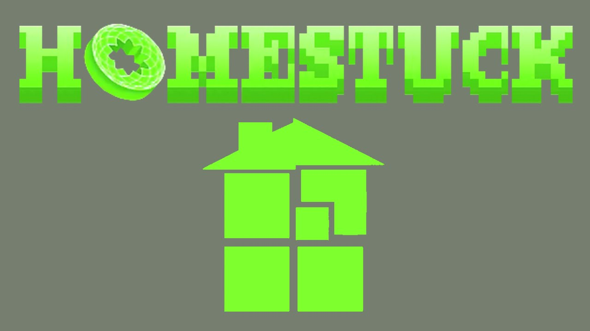
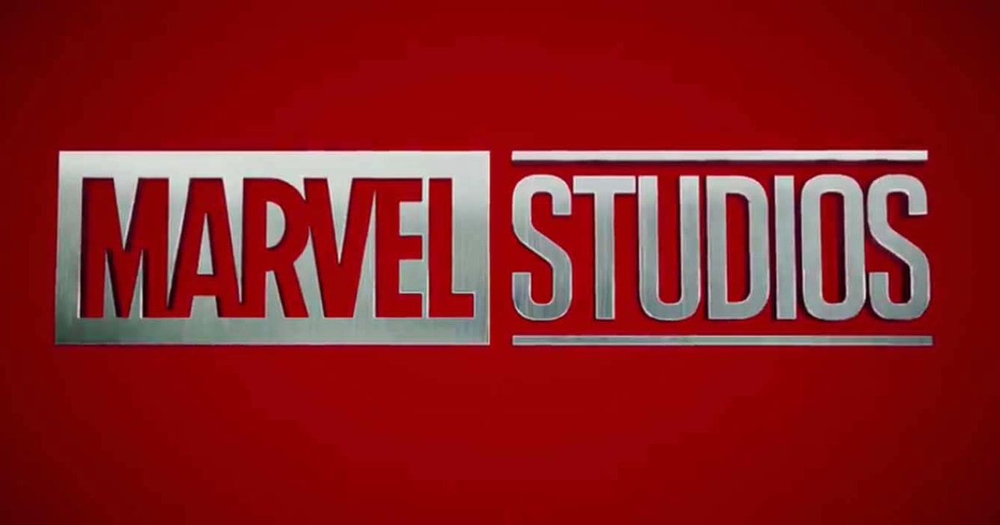
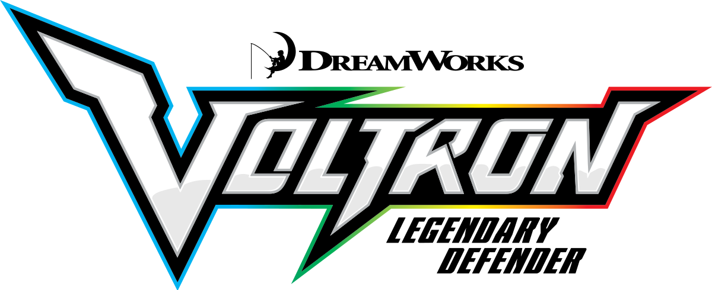
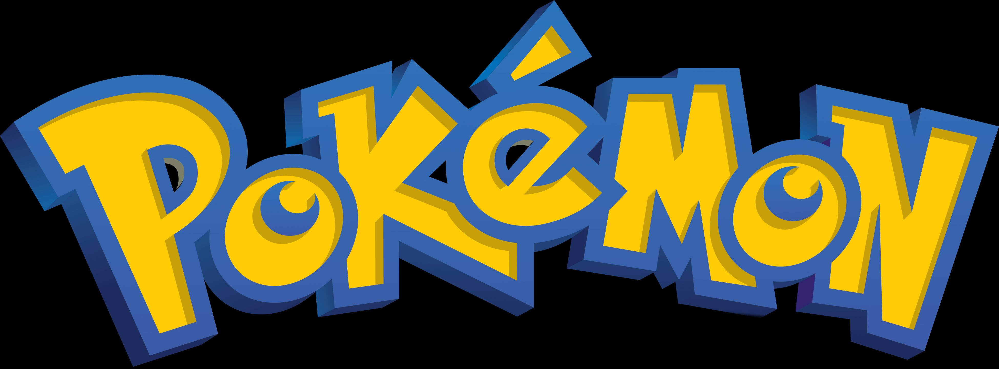
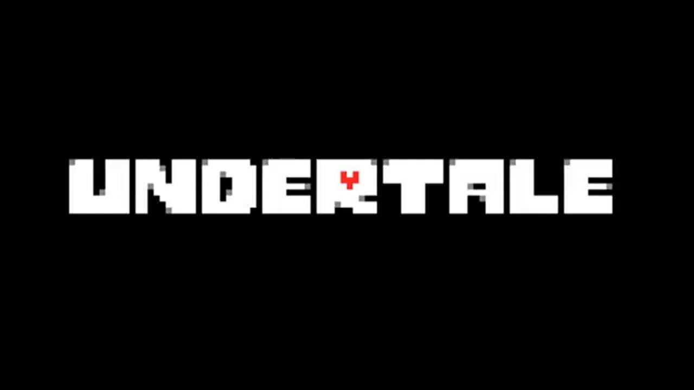

Homestuck: A webcomic, written by Andrew Hussie, that centers on a group of teens who brought the end of the world.Doctor Who: A Sci-fi with Science Fantasy elements focused in the UK, about a dimension hopping Brit with many incarnations.Marvel: Famous American Superhero series known for its large cast of characters, with ones like the Advengers, Gaurdians of the Galaxy, and Deadpool.Full Metal Alchemist: A well liked anime, staring a guy and his brother with mechenical enhancements afer a freak accident on a journey to find the philosopher's stone.Boku no Hero Academia: A fantastical anime on the meaning of being a Hero, about a boy who dreams of being the number one Hero.Hunter X Hunter: An anime that focuses on a young boy who follows in his father's footsteps to become a Hunter.Voltron: Legendary Defender: An american animated series about a team of astronauts who piolate a giant Super Robot, called "Voltron".One Punch Man: An anime about how a superhero has grown bored by the absence of challenge in his fight against evil.Pokemon: A video game series made by the company GameFreak, with multiple media, including an Anime, Card game, etc.Undertale: A Video Game, by one Toby Fox, based on a hit early Nintendo game, with a massive following after it's release.One Piece: One of the longest running anime series to date, about the journey of one guy and his pirate crew, to search for the One Piece.